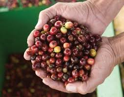

The coffee tree is a tropical evergreen shrub (genus Coffea) and grows between the Tropics of Cancer and Capricorn. The two most commercially important species grown are varieties of Coffea Arabica (Arabicas) and Coffea Canephora (Robustas).
The average Arabica plant is a large bush with dark-green oval leaves. The fruits, or cherries, are rounded and mature in 7 to 9 months; they usually contain two flat seeds, the coffee beans. When only one bean develops it is called a peaberry.
Robusta is a robust shrub or small tree that grows up to 10 metres high. The fruits are rounded and take up to 11 months to mature; the seeds are oval in shape and smaller than Arabica seeds.
Ideal average temperatures range between 15 to 24ºC for Arabica coffee and 24 to 30ºC for Robusta, which can flourish in hotter, harsher conditions. Coffee needs an annual rainfall of 1500 to 3000 mm, with Arabica needing less than other species. Whereas Robusta coffee can be grown between sea-level and about 800 metres, Arabica does best at higher altitudes and is often grown in hilly areas.
Harvesting

As coffee is often grown in mountainous areas, widespread use of mechanical harvesters is not possible and the ripe coffee cherries are usually picked by hand. The main exception is Brazil, where the relatively flat landscape and immense size of the coffee fields allow for machinery use.
Coffee trees yield an average of 2 to 4 kilos of cherries and a good picker can harvest 45 to 90 kilos of coffee cherry per day; this will produce nine to 18 kilos of coffee beans.
Coffee is harvested in one of two ways:
- Strip Picked – all the cherries are stripped off of the branch at one time, either by machine or by hand.
- Selectively Picked – only the ripe cherries are harvested and they are picked by hand.
Pickers check the trees every 8 to 10 days and individually pick only the fully ripe cherries. This method is labor intensive and more costly. Selective picking is primarily used for the finer Arabica beans.